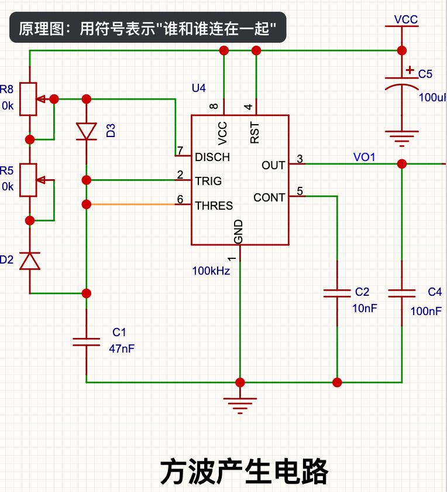
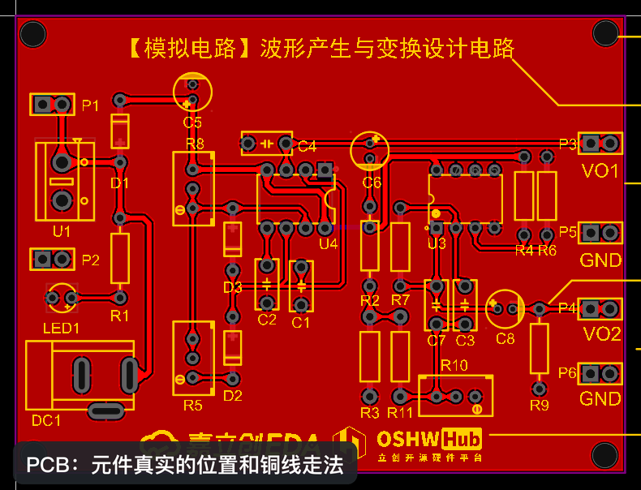
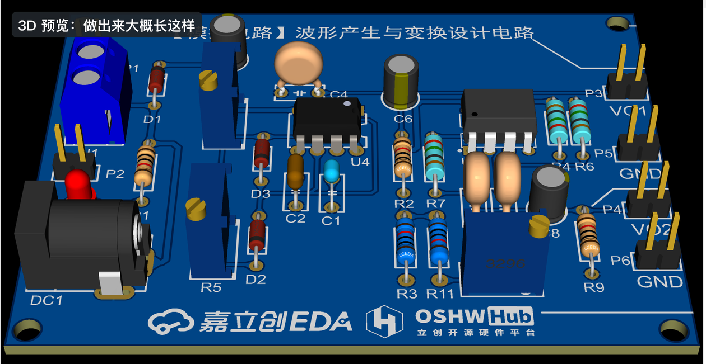

0.1 电路板是怎么从想法变成实物的
动手之前，先花 10 分钟搞清楚：一块电路板从脑子里的想法，到拿在手里能用的实物，中间要经过哪些步骤，哪些是你在电脑上做的，哪些是工厂帮你做的。
先看一眼：同一个电路的三种样子#
下面是嘉立创EDA 自带的一个官方示例工程（名字叫「示例工程_快速入门」，一个“波形产生”电路）。同一个电路，在软件里会以三种样子出现，点上面的按钮切换看看：

原理图像一张地铁线路图：它只告诉你“哪个站和哪个站之间有线路”，不管两个站在城市里实际隔多远、线路怎么拐弯。原理图里，方框、锯齿、三角这些符号代表元件（芯片、电阻、二极管……），线代表“连在一起”。

PCB 像一张真实的城市道路图：每个元件放在板子上的哪个位置、两点之间的铜线具体怎么走、多宽，全都要确定下来。工厂就是照着这张图做板子的。

3D 预览是软件根据 PCB 自动“渲染”出来的效果图，用来检查元件摆得对不对、会不会撞在一起，也可以截图发朋友圈 😄。
从想法到实物的 7 步#
做一块电路板，大致要经过下面 7 步。把鼠标移到每一步上（或点击）查看详细说明：
可以看到，前 4 步都是在电脑上完成的，这正是嘉立创EDA 这个软件负责的部分，也是本教程要教你的重点。第 5、6 步交给工厂，你只需要下单；第 7 步是拿到实物后的测试。
你需要做的 vs 工厂帮你做的#
| 你（在电脑上） | 工厂 | |
|---|---|---|
| 要做什么 | 想清楚需求 → 画原理图 → 画 PCB → 导出文件 / 一键下单 | 做出电路板 →（可选）把元件贴焊上去 → 快递给你 |
| 需要什么 | 一台电脑 + 浏览器 + 嘉立创EDA（免费） | 你上传的设计文件 + 一笔加工费 |
| 难点在哪 | 把电路“画对”：连接关系正确、元件封装选对、布线合理 | 不需要你操心，但你的设计要符合工厂的工艺能力（比如线不能太细） |
本教程会带你走完这条路#
第 1 章 Quickstart 准备了两个真正能做出来的小项目，带你把上面 7 步完整走一遍：
案例 A：眨眼小徽章
一块圆形小板，插上 USB 线，两组 LED 像眨眼一样交替闪烁。不需要编程，重点学会“画图 → 做板”的完整流程。
案例 B：可编程彩灯板
用 ESP32-C3 模组做一块能用 USB 线直接写程序的小板，控制彩灯变色。在 A 的基础上学一点单片机和简单编程。
做之前需要什么知识？不需要先学。遇到电学概念时，正文里会用“🧠 原理”卡片用大白话解释到够用为止；想深入了解的，可以去第 2 章 前置知识补全查阅。